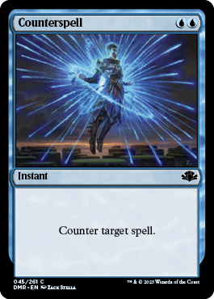
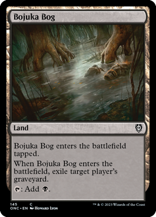
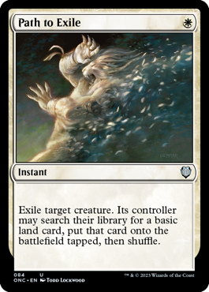

Saying NO
It is an effective stratagy to just say no and not let anything happen or to stop someone at just the right time to slow them down enof and they fall behind. its an effective conter to this stratagy to, but unless they exile it most the time you can get the card back one way or another.

Grave hate
Graveyard hate is probably one of the most devistating things this deck has to deal with. Alot of the cards are value engins or are not the best one time use cards and you need to repeat them a few times to pull far ahead. even mass board whipes dont hurt so bad if they miss your lands and you can be back to full strength in a turn or 2. but if all your stuff poofs out of existance because of grave hate what is there to work with.

Exile hate
Soooo.....even tho i said graveyard hate is the most damaging to your stratagy that was not entirely true. Exile is just so happenes most graveyard hate is exile baced. again your plan is to reuse things and gain more value then your opponet. if they deny your ability to reuse a thing it will hamper you drasticly.